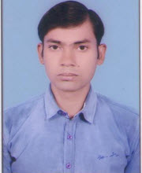
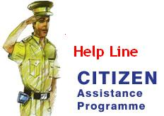

|  | Ajay Kant Upadhyay Faculty of Engineering, DayalBagh Educational Institute, Dayalbagh, Agra Uttar Pradesh - 282 005 |
 Onsite Project |
 Academic Project |
Metal Forming Virtual Simulation Lab:
Its an initiative of Ministry of Human Resource and Development (MHRD). The project aim is to develop "Virtual Laboratory" for Metal Forming processes under “National Mission on Education through Information and Communication Technology (NME-ICT)” of MHRD e-learning Project. The website helps Engineering students for understanding various Metal Forming processes through interactive videos of simulations, detailed description of the processes and Multiple Choice of Questions.MHRD has given an opportunity to Dayalbagh Educational Institute to Develop a "Sakshat Virtual Lab" of "Metal Forming Process" with IITs under one umbrella. There are twelve institutes, developing Virtual Labs for various disciplines of Simulation Labs and Remote Triggering Lab.
DEI is developing six virtual labs of different disciplines, where four labs are Simulation Labs and two labs are Remote Triggering Labs.
1. Metal Forming Virtual Simulation Lab (Simulation Lab)
2. Virtual Power Lab (Simulation Lab)
3. Virtual Chemistry Lab (Simulation Lab)
4. Virtual Microwave Lab (Simulation Lab)
5. Analytical and Virtual Instrumentation Lab (Remote Triggering Lab)
6. Virtual Advanced Lab for Interactive Design and Test in Electronics (Remote Triggering Lab)
"MFVSlab" is pure simulation lab has different type of simulations of various Metal Forming Process of Mechanical Engineering Discipline. There are more than 1200 interactive videos of different type of simulations with mixed voice of simulation process and written text process of simulation also below the simulation video.
The project aim was to develop a website which works as Online Police Station. This website provided various facilities for civilians to lodge F.I.R. and know about various activities of Police, reports etc. with a single click. This website is developed using ASP.NET with C# and MSSQL 2005. This project was submited in six semester of M.C.A. in June 2010.